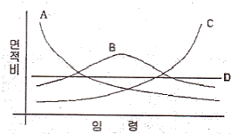
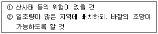
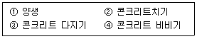

산림기사 (2013-06-02 기출문제)
1과목: 조림학
1. 제벌의 실행에 관한 설명 중 옳은 것은?
- 생육 휴면기인 겨울철이 적정시기이다.
- 낙엽송은 식재 후 15년 정도가 적정시기이다.
- 일반적으로 사관간의 경쟁이 시작되고 조림목의 생육이 저해되는 시점이 적정시기이다.
- 침입수종 제거가 목적으로 조림목은 원칙적으로 제거하지 않는다.
(정답률: 70%)

2. 파종상에서 2년, 그 뒤 상체상에서 1년을 지낸 3년생 묘목을 가장 잘 표현한 것은?
- 2-1묘
- 1-2묘
- 1/2묘
- 2-1-1묘
(정답률: 90%)
3. 다음 수목 중 자웅이주가 아닌 것은?
- 소나무
- 은행나무
- 꽝꽝나무
- 호랑가시나무
(정답률: 72%)
4. 생가지치기를 피해야 하는 수종으로 적합하지 않은 것은?
- 벚나무류
- 단풍나무류
- 느릅나무류
- 참나무류
(정답률: 74%)
5. 우수우상복엽이며 소엽은 긴 타원형이고 가장자리에 파상톱니가 있고 가끔 가시가 줄기에 발달하는 콩과의 교목성 식물은?
- 아까시나무
- 다릅나무
- 회화나무
- 주엽나무
(정답률: 72%)
6. 지위가 중(中)인 일반 활엽수림의 간벌 개시 연령으로 옳은 것은?
- 10~20년
- 20~30년
- 30~40년
- 40~50년
(정답률: 54%)
7. 파종 1개월 정도 전에 노천매장 하여 발아촉진에 도움이 되는 수종은?
- 소나무
- 잣나무
- 느티나무
- 은행나무
(정답률: 67%)
8. 삽목 발근이 용이한 수종만으로 나열된 것은?
- 감나무, 자작나무
- 꽝꽝나무, 동백나무
- 백합나무, 사시나무
- 두릅나무, 산초나무
(정답률: 61%)
9. 다음 중 지리산에서 낙엽분해에 소요되는 기간이 가장 짧은 수종은?
- 일본잎갈나무
- 전나무
- 서어나무
- 졸참나무
(정답률: 48%)
10. 산림이나묘포장 토양의 토양산도에 대하여 바르게 기술하고 있는 것은?
- pH 4.0~4.7인 토양은 망간, 알루미늄이 다량 용해 되어 나무의 생육에 이롭다.
- pH 6.6~7.3인 토양에서는 미생물의 활동이 왕성하고 양료의 이용이 높으며, 부식의 형성이 쉽게 진전된다.
- 묘포토양으로서는 pH 6.5 이상이 되어야 좋다.
- pH 7.4~8.0의 토양산도는 침엽수종의 생육에 유리하다.
(정답률: 81%)
11. 판갈이(상체) 밀도에 대한 설명 중 옳은 것은?
- 묘목이 클수록 밀식한다.
- 양수는 음수보다 밀식한다.
- 땅이 비옥할수록 소식한다.
- 잎과 가지가 확장하는 것은 밀식한다.
(정답률: 75%)
12. 다음 중 입지의 종류가 아닌 것은?(오류 신고가 접수된 문제입니다. 반드시 정답과 해설을 확인하시기 바랍니다.)
- 자연적 입지
- 경제적 입지
- 정책적 입지
- 행정적 입지
(정답률: 62%)
13. 숲을 구성하고 있는 나무 중에서 성숙목을 국소적으로 선택해서 일부 벌채하고, 이와 동시에 불량한 어린 나무도 제거해서 갱신이 이루어지도록 하는 것은?
- 택벌작업
- 왜림작업
- 죽림작업
- 개벌작업
(정답률: 85%)
14. 은행나무 등의 겉씨식물이 출현하기 시작한 지질 시대는?
- 선캄브리아대
- 고생대
- 중생대
- 신생대
(정답률: 70%)
15. 수목 호르몬인 지베렐린에 대한 설명으로 틀린 것은?
- 벼의 키다리병을 일으키는 곰팡이에서 처음 추출된 호르몬이다.
- 거의 모든 지베렐른은 알카리성을 띤다.
- 줄기의 신장을 촉진한다.
- 개화 및 결실을 돕는 역할을 한다.
(정답률: 85%)
16. 갱신의 방법에서 인공조림에 의한 방법이 아닌 것은?
- 파종 조림
- 식수 조림
- 삽목 조림
- 맹아 갱신
(정답률: 78%)
17. 다음 중 묘목의 광보상점이 가장 낮은 수종은?
- 미송
- 굴참나무
- 설탕단풍나무
- 스트로브잣나무
(정답률: 58%)
18. 다음 중 수목종자의 표준품질기준에서 효율이 가장 높은 수종은?
- 주목
- 잣나무
- 소나무
- 은행나무
(정답률: 55%)
19. 장령림의 시비에 대한 설명으로 올바른 것은?
- 항공시비에서는 가루 형태의 비료보다 굵은 입자 형태의 비료를 살포하는 것이 좋다.
- 임지시비의 시기는 노동력을 동원하기 쉬운 늦여름이나 초가을이 적기이다.
- 임지시비는 묘목을 식재한 이듬해의 가을에 1회 시비하는 것만으로 충분하다.
- 뿌리가 땅속 깊이 뻗어있기 때문에 구덩이를 깊이 파고 시비해야 한다.
(정답률: 68%)
20. 가을에 종자가 모수로부터 떨어질 때 미성숭한 배의 형태로 떨어지는 수종은?
- 층층나무
- 은행나무
- 싸리나무
- 상수리나무
(정답률: 77%)
2과목: 산림보호학
21. 잣나무 털녹병의 중간기주에 발생하는 포자형태가 아닌 것은?
- 여름포자
- 녹포자
- 겨울포자
- 담자포자
(정답률: 58%)
22. 수목의 그을음병을 방제하는데 가장 적합한 것은?
- 흡즙성 곤충을 방제한다.
- 해가림시설을 설치한다.
- 방풍시설을 설치한다.
- 중간기주를 제거한다.
(정답률: 81%)
23. 수목의 잎을 가해하는 곤충이 아닌 것은?
- 대벌레
- 솔나방
- 창나무재주나방
- 박쥐나방
(정답률: 78%)
24. 파이토플라스마에 의한 수목병이 아닌 것은?
- 대추나무 빗자루병
- 오동나무 빗자루병
- 벚나무 빗자루병
- 붉나무 빗자루병
(정답률: 88%)
25. 모잘록병균의 중요한 월동 장소는?
- 토양
- 수피사이
- 중간기주
- 병든 나무의 가지
(정답률: 84%)
26. 솔잎혹파리 성숙유충의 크기는?
- 0.5mm ~ 1.0mm
- 1.0mm ~ 1.5mm
- 1.7mm ~ 2.8mm
- 3.5mm 내외이다.
(정답률: 57%)
27. 불리한 환경에 따른 곤충의 활동정지(quiescence)와 휴면(diapause)에 대한 설명으로 옳은 것은?
- 일장은 휴면으로의 진입여부 결정에 중요한 요소는 아니다.
- 활동정지는 환경조건이 호전되면 곧 발육이 재개 된다.
- 의무적 휴면의 예는 흰불나방에서 찾아볼 수 있다.
- 기회적 휴면은 1년에 한 세대만 발생하는 곤충이 갖는다.
(정답률: 85%)
28. 다음 중 생엽의 발화 온도가 가장 높은 수종은?
- 피나무
- 뽕나무
- 은행나무
- 네군도단풍나무
(정답률: 56%)
29. 나무병은 다음 중 어느 병원체에 의하여 가장 많이 발생하는가?
- 바이러스
- 박테리아(세균)
- 곰팡이(진균)
- 파이토플라스마
(정답률: 73%)
30. 다음 중 나무좀, 하늘소, 바구미 등과 같은 천공성 해충을 방제하는데 가장 적합한 방법은?
- 경운법
- 훈증법
- 온도처리법
- 번식장소 유살법
(정답률: 84%)
31. 다음 침엽수 중 내화력이 가장 강한 수종은?
- 삼나무
- 편백
- 해송
- 가문비나무
(정답률: 62%)
32. 임연부(forest edge)에 대한 설명으로 틀린 것은?
- 햇빛이 잘 들기 때문에 종자와 과실의 생산량이 많다.
- 산림과 다른 환경 유형이 인접하는 곳을 임연부라 한다.
- 고라니나 노루는 임연부 환경을 선호한다.
- 임연부의 무성한 관목으로 인해 둥지를 만들기 어렵다.
(정답률: 81%)
33. 농약의 독성을 표시하는 단위에서 LD50 이란?
- 50% 치사에 필요한 농약의 침투 속도
- 50% 치사에 필요한 농약의 종류
- 50% 치사에 필요한 농약의 량
- 50% 치사에 필요한 시간
(정답률: 83%)
34. 참나무 시들음병에 대한 설명으로 틀린 것은?
- 매개충은 광릉긴나무좀이다.
- 피해목은 초가을 모든 잎이 낙엽된다.
- 피해목의 변재부는 병원균에 의하여 변색된다.
- 매개충의 암컷등판에는 곰팡이를 넣는 균낭이 있다.
(정답률: 61%)
35. 다음 중 물에 타서 사용하는 약제가 아닌 것은?
- 액제
- 분제
- 유제
- 수화제
(정답률: 58%)
36. 주로 묘포의 종자를 가해하는 조류로만 짝지어진 것은?
- 백로, 왜가리
- 박새, 딱따구리
- 참새, 할미새
- 어치, 동박새
(정답률: 66%)
37. 대추나무 빗자루병의 내과요법으로 많이 이용되고 있는 약제는?
- 베노밀(benomyl)수화제
- 스트렙토마이신(streptomycin)수화제
- 아진포스메틸(azinphos-methil)수화제
- 옥시테트라사이클린(oxytetracycline)수화제
(정답률: 87%)
38. 미국흰불나방의 월동 형태로 가장 적합한 것은?
- 알
- 성충
- 번데기
- 유충
(정답률: 78%)
39. 대추나무 빗자루병에 대한 설명으로 틀린 것은?
- 감염시 꽃봉오리가 잎으로 변한다.
- 대추나무 흉고 직경 10~15cm 기준으로 항생제를 1회 5g/1ℓ을 수간주입 한다.
- 매개충은 마름무늬매미충이다.
- 병든 가지와 줄기는 제거하여 소각처리 한다.
(정답률: 56%)
40. 포스팜 50% 엑제 50cc를 포스팜 농도 0.5%로 희석하려고 할 경우 요구되는 물의 양은? (단, 원액의 비중은 1이다.)
- 4500cc
- 4950cc
- 5500cc
- 6000cc
(정답률: 70%)
3과목: 임업경영학
41. 임목의 흉고직경(DBH)을 측정하기 위해 사용되는 여러 가지 기구가 있다. 다음 중 나무의 둘레를 측정하여 직접 직경을 구할 수 있도록 고안된 기구는?
- 윤척(Caliper)
- 직경테이프(Diameter Tape)
- 빌티모아 스티크(Biltmire Stick)
- 슈피겔 렐라스코프(Spiegel Relascope)
(정답률: 77%)
42. 임업원가 관리에 있어서 원가의 유형은 사용 목적에 따라 여러 가지로 분류할 수 있다. 다음 중 기회원가에 대한 설명으로 옳은 것은?
- 특정 부문의 제품 또는 공정별로 쉽게 알아낼 수 있는 원가를 말한다.
- 제품의 생산수준에 따라 비례적으로 변동하는 원가를 말한다.
- 제품의 생산수준이 변하여도 총액이 고정되어 있는 원가를 말한다.
- 여러 가지 생산 활동 방안 중에서 어느 한 가지를 선택함으로써 다른 방안을 선택할 수 없게 되어 포기한 수익을 말한다.
(정답률: 83%)
43. 산림을 비축적 자산의 하나로 보유하는 산림의 경영형태는?
- 종속적 임업경영
- 부차적 임업경영
- 주업적 임업경영
- 가업적 임업경영
(정답률: 59%)
44. 통나무의 중앙단면적이 0.25m2이고 길이가 15m라고 할 때 이 통나무의 재적을 후버(Huber)식에 의해 구하면 얼마인가?
- 2.25m3
- 2.75m3
- 3.25m3
- 3.75m3
(정답률: 66%)
45. 다음 중 자산, 부채, 자본의 관계를 잘 나타낸 것은?
- 자산 = 자본 - 부채
- 자산 = 자본 + 부채
- 자산 = 부채 - 자본
- 자산 = 자본 / 부채
(정답률: 84%)
46. 다음 그림과 같은 4가지 형태의 산림의 구조 중 속성수 도입 및 복합임업경영(혼농임업 등)도입이 필요한 산림구조는?

- A형 산림구조
- B형 산림구조
- C형 산림구조
- D형 산림구조
(정답률: 74%)
47. 임지의 평가에서 똑같은 산림경영패턴이 영구히 반복된다는 것을 가정한 평가법은?
- 임지비용가법
- 임지기망가법
- 임지예상가법
- 임지매매가법
(정답률: 77%)
48. 임업투자계획의 경제성을 평가하는 방법이 아닌 것은?
- 순현재가치의 방법
- 편익비용비의 방법
- 수확표에 의한 방법
- 내부수익률의 방법
(정답률: 79%)
49. 임업소득의 계산방법 중 옳은 것은?
- 가족노동에 귀속하는 소득 = 임업소득-(지대+자본이자)
- 경영관리에 귀속하는 소득 = 임업소득-(지대+자본이자)
- 임지에 귀속하는 소득 = 임업소득-(지대+가족노임추정액)
- 자본에 귀속하는 소득 = 임업순수익-(지대+자본이자)
(정답률: 53%)
50. 매년 말에 풀베기 작업을 통해 1,000,000원의 수입을 얻을 수 있는 임지가 있다면 이 임지의 자본가는 얼마인가?(단, 이자율은 8%이다.)
- 925,926원.
- 1,250,000원
- 12,500,000원
- 80,000원
(정답률: 68%)
51. 산림의 생산력 발전 단계 중 노동생산성이 작업노동과 관리노동으로 분리 취급된 단계는?
- 자연자원 보존의 단계
- 자본장비 확충의 단계
- 자연력 의존의 단계
- 자연력 통제의 단계
(정답률: 68%)
52. 다음 임업자본 중 유동자본에 해당하지 않는 것은?
- 관리비
- 조림비
- 임금
- 차량
(정답률: 80%)
53. 수확을 위한 벌채는 입목의 평균수령이 기준벌기령 이상에 해당하는 임지에서 실행하는 다음 중 수확을 위한 벌채 실행방법이 아닌 것은 무엇인가?
- 솎아베기
- 골라베기
- 왜림작업
- 모수작업
(정답률: 66%)
54. 우리나라 국유림의 경영계획구 명칭은 보통의 경우 어떻게 부여하는가?
- 행정구역상 시, 군 단위 명칭
- 행정구역상 읍, 면 단위 명칭
- 행정구역상 리, 마을 단위 명칭
- 해당 지방산림청의 명칭
(정답률: 79%)
55. 효과적인 휴양자원 관리를 위해서는 휴양지역의 속성, 즉 그 지역의 특성을 아는 것이 중요하다고 한다. 그 이유에 가장 합당한 것은?
- 다른 자원의 이용에 대한 경쟁력과 갈등을 규명하는데 기초정보를 제공한다.
- 야외 휴양지는 많은 위험요소를 가지고 있어 이를 사전에 예방할 수 있다.
- 야외활동을 통하여 이용객의 욕구를 충족시킬 수 있는 서비스 개발이 가능하다.
- 현재의 수준을 파악하여 더욱 서비스의 질을 높은 수준으로 개선하는 계기가 된다.
(정답률: 62%)
56. 산림문화·휴양에 관한 법률에 따라 자연휴양림 지정을 위한 타당성평가 기준으로 틀린 것은?
- 경관 : 표고차, 임목, 수령, 식물 다양성 및 생육상태 등이 적정할 것
- 위치 : 접근도로 현황 및 인접도시와의 거리 등에 비추어 그 접근성이 용이 할 것
- 수계 : 계류 길이, 계류 폭, 수질 및 유수기간 등이 적정할 것
- 휴양요소 : 유용적·문화적 유산, 산림문화자산 및 특산물 등이 다양할 것
(정답률: 59%)
57. 산림문화·휴양에 관한 법률에 따라 자연휴양림시설에서 [보기]와 같은 설치기준에 해당하는 것은?

- 편익시설
- 숙박시설
- 위생시설
- 안전시설
(정답률: 82%)
58. 휴양지는 생태적 수용, 물리적 수용, 시설적 수용, 사회적 수용으로 분류된다. 그 중 생태적 수용력에서 중요시되는 영향 인자는?
- 시설의 점유율
- 특정 동·식물의 관찰 개체 수
- 이용자 수
- 이용자간 인간관계
(정답률: 84%)
59. 어떤 임목의 흉고단면적이 0.1m2, 수고가 14m일 때 형수법에 의해 이 임목의 재적을 구하면? (단, 형수는 0.4 이다.)
- 0.14m3
- 0.56m3
- 1.4m3
- 5.6m3
(정답률: 74%)
60. 매년 800,00원씩 조림비를 5년간 지불한다면 마지막 지불이 끝났을 때의 유한연년수입의 후가합계식을 이용하여 후가를 계산하면 약 얼마인가?(단, 이율은 5%이고, 1.⑤5=1.2763을 적용한다.)
- 4,420,800원
- 4,410,000원
- 5,526,000원
- 5,700,000원
(정답률: 45%)
4과목: 임도공학
61. 임업토목시공 작업별 적용기종 중 제근을 주로 하는 기종은?
- backhoe
- tractor-shovel
- rake dozer
- road roller
(정답률: 65%)
62. 옹벽의 안정정도를 계산 검토해야 하는 조건이 아닌 것은?
- 전도에 대한 안정
- 활동에 대한 안정
- 침하에 대한 안정
- 외부응력에 대한 안정
(정답률: 60%)
63. 축척이 1:25000의 지형도에서 도상거리가 8cm일 때 지상거리는 몇km인가?
- 2
- 3
- 4
- 5
(정답률: 66%)
64. 지형도 1:25000에서 주곡선의 간격은?
- 5m
- 10m
- 15m
- 20m
(정답률: 66%)
65. 토목작업 시 깎아낸 흙이 부족할 때에는 다른 곳에서 파와야 된다. 이렇게 필요한 흙을 채취하는 곳을 무엇이라 하는가?
- 취토장
- 사토장
- 집재장
- 토장
(정답률: 79%)
66. 임도의 종단물매가 4%, 횡단물매가 3%일 때의 합성물매는?
- 3%
- 5%
- 7%
- 9%
(정답률: 81%)
67. 임도노면 포장공사의 방법에는 여러 가지가 있으나 부순돌을 재료로 하여 표층을 부설한 길을 쇄석도 또는 머캐덤도 라고도 한다. 다음 중 머캐덤도의 설명으로 틀린 것은?
- 교통체 머캐덤도 - 쇄석이 교통과 강우로 인하여 다져진 도로
- 수체 머캐덤도 - 쇄석의 틈 사이에 모래 및 마사를 삼투시켜 롤러로 다져진 도로
- 역청 머캐덤도 - 쇄석을 타르나 아스팔트로 결합시킨 도로
- 시멘트 머캐덤도 - 쇄석을 시멘트로 결합시킨 도로
(정답률: 83%)
68. 임도 구조와 구성요소에 대한 연결이 잘못된 것은?
- 시거 - 노체길
- 길어깨 - 횡단선형
- 최급 물매 - 종단선형
- 최소 곡선 반지름 - 평면선형
(정답률: 55%)
69. 토양이 흩어진 후에는 수축하기 때문에 흙쌓기 후에는 얼마간의 더쌓기를 실시한다. 흙쌓기의 높이가 3m라면 더쌓기의 높이 기준은?
- 흙쌓기 높이의 10%
- 흙쌓기 높이의 20%
- 흙쌓기 높이의 25%
- 흙쌓기 높이의 30%
(정답률: 74%)
70. 임도망 계획 시 고려해야 할 사항으로 틀린 것은?
- 신속한 운반이 되도록 한다.
- 운재비가 적게 들도록 한다.
- 운반량에 제한을 두도록 한다.
- 일기 및 계절에 따른 운재능력의 제한이 없도록 한다.
(정답률: 70%)
71. 임도의 횡단선형 중 임도의 나비로 맞는 것은?
- 차도나비
- 차도나비 + 길어깨나비
- 차도나비 + 길어깨나비 + 옆도랑
- 차도나비 + 길어깨나비 + 옆도랑 + 성토의 비탈면
(정답률: 62%)
72. 평판측량에 있어 평판 설치의 3요소가 아닌 것은?
- 치심
- 시준
- 표정
- 정치
(정답률: 65%)
73. 임도에서 콘크리트옹벽의 제작 과정을 순서대로 바르게 나열한 것은?

- ④→②→③→①
- ①→③→②→④
- ①→②→③→④
- ②→③→④→①
(정답률: 70%)
74. 임의의 등고선과 교차되는 두 점을 지나는 임도의 노선 물매가 10%이고, 등고선 간격이 5m 일 때 두 점간의 수평거리는?
- 5m
- 50m
- 10m
- 100m
(정답률: 78%)
75. 임도망 계획 시 고려하지 않아도 되는 사항은?
- 신속한 운재와 비용을 줄인다.
- 임목 벌채량을 적게 한다.
- 운반량의 탄력성이 있도록 한다.
- 목재운반에 일관성이 있어야 한다.
(정답률: 79%)
76. 다음 중 임도교량의 활하중에 속하는 것은?
- 주보의 무게
- 통행하는 트럭의 무게
- 바닥 틀의 무게
- 교상의 시설물
(정답률: 84%)
77. 통일 분류법에 의한 모래는 흙 입자 지름이 몇 mm의 범위인가?
- 0.0⑤mm~0.42mm
- 0.075mm~4.75mm
- 0.42mm~2mm
- 2mm~4mm
(정답률: 52%)
78. 1/25000 지형도상에서 산정표고가 250m, 산 밑의 표고가 50m인 사면의 경사는? (단, 산정부터 산 밑까지 지형도상의 수평거리는 6cm임)
- 약 10.3%
- 약 12.3%
- 약 13.3%
- 약 16.3%
(정답률: 53%)
79. 저습지대에서 노면의 침하를 방지하기 위하여 사용하는 것은?
- 토사도
- 사리도
- 섶길
- 쇄석도
(정답률: 72%)
80. 임도시설의 물매를 표현하는 방법으로 틀린 것은?
- 각도 : 수평은 0°, 수직은 90°로 하여 그 사이를 90등분한 것
- 1/n : 높이 1에 대하여 수평거리 n으로 나눈 것
- n% : 수평거리 100에 대한 n의 고저차를 갖는 백분율
- 비탈물매 : 수평거리 100에 대한 수직높이의 비
(정답률: 44%)
5과목: 사방공학
81. 비탈면 녹화조경공법의 목적이 아닌 것은?
- 경관미의 조속한 회복
- 조림을 위한 지존작업
- 도로 외부로부터의 교통장애요인의 저지
- 인위적으로 훼손된 비탈면을 빠르고 안전하게 피복하여 침식 및 붕괴현상의 방지
(정답률: 62%)
82. 식생공법에 관한 설명으로 틀린 것은?
- 인위적으로 발생된 비탈면을 식물로 피복녹화하는 방법을 말한다.
- 토양침식을 방지하며, 지표면의 온도를 완화·조절한다.
- 식물체에 의한 표토의 토립자에 대한 동상붕락의 현상이 증가한다.
- 녹화에 의한 경관조성효과를 목적으로 시공한다.
(정답률: 78%)
83. 침식과정의 메카니즘에서 가장 초기상태의 침식은?
- 구곡침식
- 누구침식
- 면상침식
- 우격침식
(정답률: 82%)
84. 산복사방에서 돌흙막이공을 계획할 때 최대 높이는 원칙적으로 얼마까지로 할 수 있는가?
- 찰쌓기 2.5m 이하, 메쌓기 1.5m 이하
- 찰쌓기 3.0m 이하, 메샇기 2.0m 이하
- 찰쌓기 3.5m 이하, 메쌓기 2.5m 이하
- 찰쌓기 4.0m 이하, 메쌓기 3.0m 이하
(정답률: 58%)
85. 해안 모래언덕 사방공사의 주요 공종이 아닌 것은?
- 둑쌓기
- 구정바자얽기
- 정사울세우기
- 모래덮기
(정답률: 51%)
86. 선떼붙이기 공법에 대한 설명으로 틀린 것은?
- 1m당 떼의 사용 매수에 따라 1~9급으로 구분한다.
- 선떼붙이기 중 경제적으로 또는 효과적으로 널리 채용하는 것이 1~3급이다.
- 1급 선떼붙이기에 가까울수록 고급 공법이다.
- 발디딤은 선떼붙이기 작업의 편의를 도모하고, 바닥떼의 활착이 용이하게 하기 위한 것이다.
(정답률: 75%)
87. 돌 골막이 시공 시 돌쌓기의 표준 기울기로 맞는 것은?
- 1 : 0.1
- 1 : 0.2
- 1 : 0.3
- 1 : 0.4
(정답률: 83%)
88. 계상에서 석력의 교대는 있어도 세굴과 침전이 평형을 유지하여 종단형상에 변화를 일으키지 않는 기울기는?
- 평형기울기
- 안정기울기
- 사면기울기
- 편류기울기
(정답률: 63%)
89. 파종에 의하여 비탈면에 응급으로 식생을 도입하고자 하는 경우 외래 초본류를 주로 하고 여기에 재래 초본류를 첨가하는 이유를 잘못 설명한 것은?
- 외래 초본류는 일반적으로 발아가 빠르고, 조기에 지표의 피복효과가 기대되기 때문이다.
- 외래 초본류는 종자의 구득이 일반적으로 용이하기 때문이다.
- 외래 초본류는 엽량과 뿌리가 많으므로 지표와 지중에 유기물질을 집적하여 토양의 성질을 개선해 주기 때문이다.
- 외래 초본류는 생육이 왕성하여 뿌리의 자람이 좋고, 토양의 긴박력이 작기 때문이다.
(정답률: 55%)
90. 파종녹화공법에서 파종량(W)을 구하는 식으로 옳은 것은?(단, S=평균입수. P=순도, B=발아율, C=발생대기본수이다.)
- W = C×S×P×B×100
- W =( C/(S×P×B) ) × 100
- W = ( C/(S×P) ) ×B × 100
- W = ( C/(S×B) ) × P × 100
(정답률: 80%)
91. 산지사방공사에서 6급 선떼붙이기 1m를 시공하는데 필요한 떼(길이 40cm, 나비 25cm, 흙 두께5cm) 사용 매수는?
- 12.50매
- 7.50매
- 6.25매
- 2.50매
(정답률: 79%)
92. 평균유속을 V(m/s), 유로 단면적을 A(m2)라고 할때 유량(Q)은?
- Q = V/A
- Q = VA
- Q = V/(2A)
- Q = (2A)/V
(정답률: 79%)
93. 해풍에 의해 날리는 모래를 억류하고 퇴적시켜 인공사구를 조성하기 위해 사용하는 사방공법은?
- 비탈덮기
- 떼붙이기
- 퇴사울세우기
- 목책세우기
(정답률: 89%)
94. 절토사면 중 토질이 모래층인 사면에 대한 설명으로 옳지 않은 것은?
- 절토공사 직후에는 단단한 편이나 건조하면 푸석푸석해지고 붕락되기 쉽다.
- 침식에 대단히 약하여 식생이 착근하기 전에 유실될 가능성이 높다.
- 토양유실을 방지할 목적으로, 보통 흙으로 전면적 객토를 해주어야 한다.
- 적용 공법은 새집붙이기 공법이 가장 적절하다.
(정답률: 77%)
95. 토사유과구역에 대한 설명으로 맞지 않는 것은?
- 토사생산구역에 접속된 구역이다.
- 침식이나 퇴적이 비교적 적다.
- 보통 선상지를 형성한다.
- 중립지대 또는 무작용지대 등으로 불린다.
(정답률: 59%)
96. 다음 중 사방댐의 위치 선정으로 맞는 것은?
- 댐은 계상 및 양안에 암반이 존재해야 하며, 사력층 위에는 사방댐을 계획하면 안된다.
- 지계의 합류점 부근에서 댐을 계획할 때는 일반적으로 합류점의 직 상류부에 위치를 선정한다.
- 계단상으로 댐을 계획할 때는 첫 번째 댐의 추정 퇴사선이 구계상기울기를 자르는 점에 상류댐의 계획위치가 오도록 한다.
- 유출토사 억지 목적의 댐은 퇴적지 하류에서 댐 상류부의 계상 물매가 완만하고 계폭이 좁은 지점에 계획한다.
(정답률: 39%)
97. 계류의 유속과 방향을 조절할 수 있도록 둑이나 계안으로부터 돌출되게 설치하는 계간 공작물은?
- 구곡막이
- 기슭막이
- 수제
- 옹벽
(정답률: 78%)
98. 비탈면 녹화공종에서 초식공법으로만 나열될 것은?
- 힘줄박기공법, 새심기공법
- 줄떼심기공법, 평떼공법
- 격자틀붙이기공법, 선떼붙이기공법
- 돌망태쌓기공법, 바자얽기공법
(정답률: 77%)
99. 화성암은 화학적으로 어떤 성분함량에 따라 산성암, 중성암, 염기성암으로 구분되는가?
- Al2O3
- SiO2
- Fe2O3
- K2O
(정답률: 80%)
100. 해안과 일반적인 주풍방향의 설명 중 틀린 것은?
- 모래언덕은 주풍과 밀접한 관계가 있다.
- 해안지방에서의 주풍은 대부분 바다에서 육지를 향해 분다.
- 주풍방향과 해안선의 각도가 직각일 경우에 주풍이 파도와 모래에 미치는 영향은 가장 적다.
- 바람은 파도와 연안류를 일으키며, 파도로 육지에 밀려온 모래를 이동시키는 원동력이 된다.
(정답률: 81%)